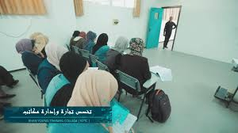
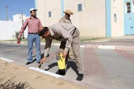
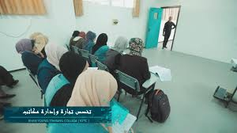
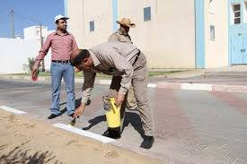

EB
The Business Administration and E-Commerce specialization covers fields of study that combine administrative science and technology, which include information systems, the Internet, databases, accounting, economics, finance,
You are welcome to an introductory page about Khan Yunis Training College, which is located in the city of Gaza, which receives outstanding students and which studies the most important practical and physical skills and includes many specializations, including business administration, e-commerce, nursing, health administrative assistant and many other skills.
EB
The Business Administration and E-Commerce specialization covers fields of study that combine administrative science and technology, which include information systems, the Internet, databases, accounting, economics, finance,
nuers
It is one of the medical specialties that is concerned with the health of the patient and relieves his pain, and nursing is one of the assisting specialties for the medical profession, where the nursing
HAA
Administrative assistant duties usually involve the responsibility of performing writing duties in nearly all industries, and some may be more specialized than others, such as those in the legal sector. Most of the administrative
bom
The student acquires during his learning (training) in this section all the skills that qualify him for a suitable job opportunity in the local or regional labor market and enable him to live decent, serve his family and society
people
studding
teachre
male-fmale
 


